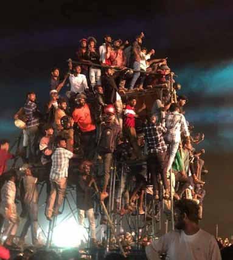
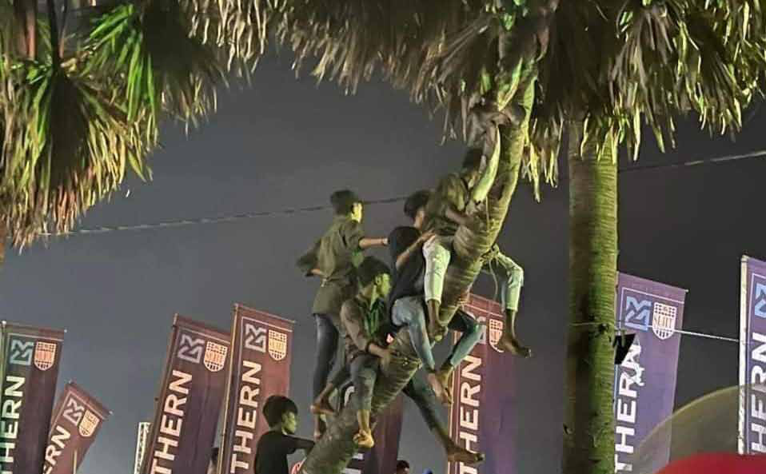
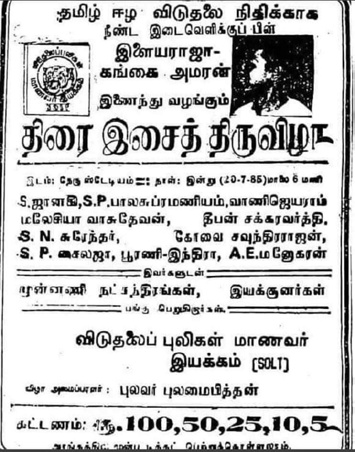
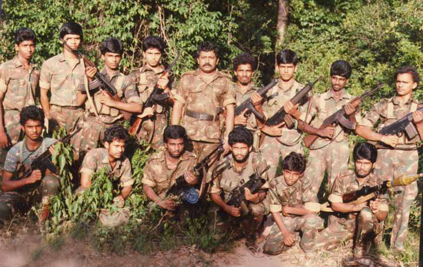
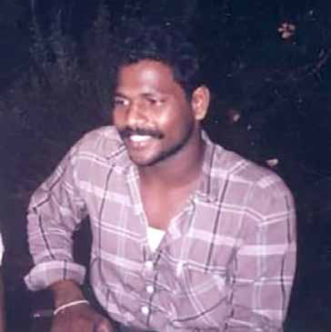
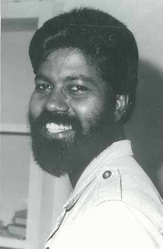
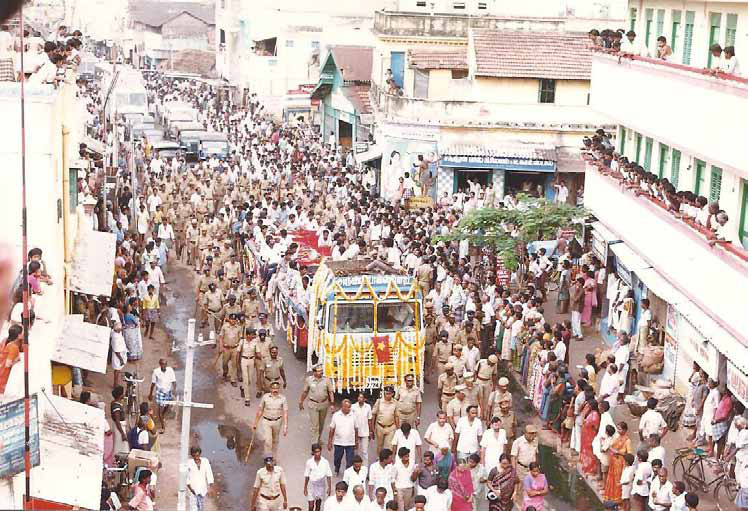

Jaffna's Jam-Packed Jamboree
Jaffna's Jam-Packed Jamboree
Jaffna Monitor hellojaffnamonitor@gmail.com 16 R ecently, the renowned singer Hariharan's music show at the famous Muttraveli open arena in Jaffna ignited both excitement and controversy. The event was graced by the presence of celebrated actress Tamannaah, who performed her 'Kaavala' dance from the movie 'Jailer'. As expected, the performance electrified the youth in attendance. However, there was a degree of mismanagement on the part of the organizers, which led to the event being prematurely abandoned. The inability to control the overwhelming enthusiasm of the crowd ultimately resulted in the disruption of the show. OPINION BY: Our Special Correspondent Jaffna's Jam-Packed Jamboree Enthusiastic Youths Braving Challenges to See Hariharan's Recent Music Show in Jaffna


Jaffna Monitor hellojaffnamonitor@gmail.com 17 The show became a point of contention, with opinions sharply divided: some attendees celebrated the enthusiasm of the youth, while others expressed their disapproval. Adding a whimsical twist, photographs of several youths perched on a Palmyra tree and an electricity pole for a better view of the performance amused people across various Tamil-speaking districts in Sri Lanka and even in parts of Tamil Nadu. However, the event also drew fierce criticism from Tamil nationalist supporters and LTTE sympathizers, some of whom went as far as to denounce it as a ploy by the Sri Lankan government and its intelligence agencies to sway the mindset of Jaffna's youth. We will not delve into the debate over the appropriateness of such musical shows. Instead, we offer a glimpse into history. On July 20, 1985, the Student Organization of Liberation Tigers (SOLT), the student wing of the LTTE, organized a large music show at the Chennai Nehru Indoor Stadium. The chief organizer of the program was Pulavar Pulamaipithan, the "Arasavai Kavignar" (poet laureate) of M. G. Ramachandran's (MGR) government. The musical performance featured legendary composer Ilaiyaraaja and his younger brother Gangai Amaran. Legendary singers such as S. P. Balasubrahmanyam, S. Janaki, Vani Jairam, Malaysia Vasudevan, Deepan Chakravarthy, S. N. Surendar, Kovai Soundarajan, S. P. Sailaja, and A. E. Manoharan, also known as Ceylon Manoharan, graced the event. A vast audience gathered for the concert, with the then Tamil Nadu Chief Minister taking on the role of an informal organizer. He issued directives to his officials, the police, and the media to ensure the event's grand success. Additionally, he arranged for notable actors such as Vijayakanth and Sathyaraj, along with a few actresses, to attend the event, further adding to its allure. Remarkably, the Student Organization of Liberation Tigers (SOLT) managed to raise funds from this event, achieving a level of financial success that was unprecedented for the organization at the time. To facilitate a smooth experience for attendees, the Tamil Nadu government went the extra mile. Special buses were deployed to ensure participants could return home safely. Moreover, regular government bus services were extended until 1 AM, specifically to accommodate those attending the event. Hundreds of Sri Lankan Tamils residing in Tamil Nadu flocked to the event, having been invited by the LTTE. So, everyone can relax - even the LTTE once- organized musical shows featuring cinema stars. Photo of the poster announcing the music show organized by the Student Organization of Liberation Tigers (SOLT) on July 20, 1985, at the Chennai Nehru Indoor Stadium"

Jaffna Monitor
hellojaffnamonitor@gmail.com
18
Mahathaya's Saga:
Power, Paranoia, and Politics in the LTTE
BY:
Kaniyan Pungundran
fzpad; G+q;Fd;wd;
From left to right, seated: 3rd is Suban, Mannar Commander, 4th is Robert, also known as Vellai, 6th is Lt. Col Anpu. Standing:
5th is LTTE Chief Prabhakaran, 6th is Kirupan. Photo taken in 1987 at Nithikaikulam Forest in Mullaitivu
Part 04
The curious case of Kirupan and the increasing
paranoia about RAW
In 1987, Kirupan, initially serving as a bodyguard to
Prabhakaran, gradually garnered his trust and confidence.
His ascent within the organization became particularly
pronounced following Prabhakaran's definitive move from
India to Sri Lanka in the same year. Recognizing Kirupan's
loyalty and capabilities, Prabhakaran 1989 entrusted him
with the significant responsibility of managing the LTTE's
operations in India.
Allegations point to Kirupan's involvement in the massacre of
13 members of the Eelam Peoples Revolutionary Liberation
Series

Jaffna Monitor hellojaffnamonitor@gmail.com 19 Front (EPRLF), including Secretary-General Padmanabha, on June 19, 1990. However, reliable sources relayed to the Jaffna Monitor that Kirupan was actually not informed about the attack on Padmanabha. This operation was orchestrated by the LTTE's intelligence wing under the leadership of Pottu Amman, with One-Eyed Sivarasan executing the plan. The assault team included David (Christopher Antony Mariythass- Polikandy- Jaffna) and Ravi, a 1st batch trainee of tigers. (now residing in London), and Daniel is also alive, living somewhere in an overseas country, all under Sivarasan's command. Shanthan- one of the accused in the Rajiv murder case, worked as an informant. Credible sources within the LTTE intelligence wing, who were aware of the execution of Padmanabha's attack, have suggested to Jaffna Monitor that one of the leaders of the EPRLF, who is now a prominent Tamil Nationalist politician, also acted as an informant for Pottu Amman's team. This followed an agreement between Pottu Amman and the so-called politician, mainly encompassing the sparing of his life from the Tigers' attacks. Pottu Amman, who became the head of the intelligence wing in December 1989 and was fully operational by January 1990, deployed Sivarasan to India for specific missions and assigned Charles to Colombo for intelligence tasks. The assassination of Padmanabha, ordered by Pottu Amman, was the first major attack planned and executed under his direction. This incident was extensively documented by the LTTE. Credible sources told Jaffna Monitor that one assassin Sivarasan David, one of the assassins involved in the Padmanapa operation Padmanabha


Jaffna Monitor hellojaffnamonitor@gmail.com 20 took photos of the dead bodies of Padmanabha and his team with a film camera. This attack, along with the photographic evidence, served to consolidate Pottu Amman's position within the organization and strengthen his ties with Prabhakaran. Prabhakaran was particularly impressed with the way Pottu Amman's team executed the ruthless plan and photographed the dead bodies in detail. In India, Kirupan's primary responsibilities involved acquiring essential resources for the LTTE, such as fuel, explosive materials, boat fiber, and medical supplies. A colleague from the LTTE, who worked with Kirupan in India, described him as a dedicated individual with an innocent appearance. However, the behavior of his subordinates often bordered on brutality. These individuals were known for their aggressive tactics, which included brandishing firearms at Tamil Nadu police, assaulting local residents, and even firing at vehicles on highways. An enduring associate of the LTTE has shed light on the evolving relationship with the Indian Tamil community. Initially, the LTTE garnered support through shared cultural and linguistic connections, characterized by expressions of love and kinship. However, this approach underwent a transformation during the tenure of Raghu, Kiruban's predecessor in India. Kiruban, following in his predecessor's footsteps, shifted focus towards financial incentives for the Indian Tamils and, at times, resorted to violence with them to achieve his objectives. In the early part of 1991, following these events, Kirupan was arrested near Neelangarai in Chennai and subsequently detained in Vellore jail. Kiruban reportedly escaped Large Crowd Gathers at Funeral of Pathmanabha and 14 Other EPRLF Members, Mourning the Tragic Loss Following the Kodambakkam Attack on June 19, 1990

Jaffna Monitor hellojaffnamonitor@gmail.com 21 while being transported under police escort from Vellore to the Pudukkoattai courts near Maraimalai Nagar. Upon returning to Jaffna, he captivated the LTTE leadership, including the LTTE supremo, with his dramatic escape story, reminiscent of a James Bond film. His return was celebrated by the LTTE supremo with a special lunch feast, and Kiruban was subsequently granted a leave of absence for a few months, during which he returned to his hometown of Point Pedro. However, Pottu Amman harbored suspicions about Kiruban's escape. He had his informants engage with Kiruban and noticed discrepancies in the escape story told to Prabhakaran and himself compared to what was shared with his informants. Additionally, Kiruban's escape occurred after the assassination of Rajiv Gandhi, a time when security measures in Tamil Nadu were significantly heightened, and many LTTE associates were either arrested, went into hiding, or severed ties with the LTTE due to fear of repercussions from Indian authorities. Therefore, the feasibility of Kiruban's daring escape as he described it was questioned by Pottu Amman, casting doubt on the authenticity of his account. Credible sources within the LTTE's intelligence wing revealed to Jaffna Monitor that Pottu Amman, armed with a file on Kiruban, approached Prabhakaran to request custody of Kiruban. Prabhakaran, already influenced by paranoia, readily agreed. Kiruban was subsequently subjected to severe torture and coerced into confessing that he was a Research and Analysis Wing (R&AW or RAW) agent and had attempted to eliminate Prabhakaran. This confession was forced in a meeting attended by most of the leading members of the LTTE, sending a clear message about the consequences awaiting those who strayed from the organisation's line. Following this, Kiruban was eliminated. Pottu Amman harbored a conspiracy theory that RAW, India's foreign intelligence agency, had turned Kiruban into a double agent. He believed that Kiruban's supposed escape was staged by RAW and that Kiruban was assigned to assassinate Prabhakaran. Many influential LTTE members still believe that Kiruban was indeed a mole planted by RAW. A former member of the LTTE's intelligence wing, who had extensively discussed Kiruban's case with the leaders of the intelligence wing, told Jaffna Monitor that Kapil Amman, Deputy Leader of the Intelligence Wing, Mathavan Master, Head of the LTTE Intelligence Training Centre, and Sangeethan, head of the intelligence wing's education wing (who was secretly referred to as 'Saguni' by intelligence wing members due to his cunning nature and tendency to speak ill of others to his boss, Pottu Amman), confirmed that Kiruban was indeed a mole planted by RAW. However, there is also a perspective within the LTTE that Kiruban was innocent and not an agent of RAW. A few prominent LTTE members who spoke with Jaffna Monitor believe that he indeed made a successful and daring escape, only to ultimately fall victim to Pottu Amman's paranoia. Regardless of the truth, this incident significantly heightened the paranoia of Prabhakaran and Pottu Amman towards India and RAW, leading to what was described as a 'RAW Phobia' within the organization. This deep-seated fear prompted the LTTE to carry out numerous ruthless executions that would typically be unthinkable for any rational individual. To be continued.....